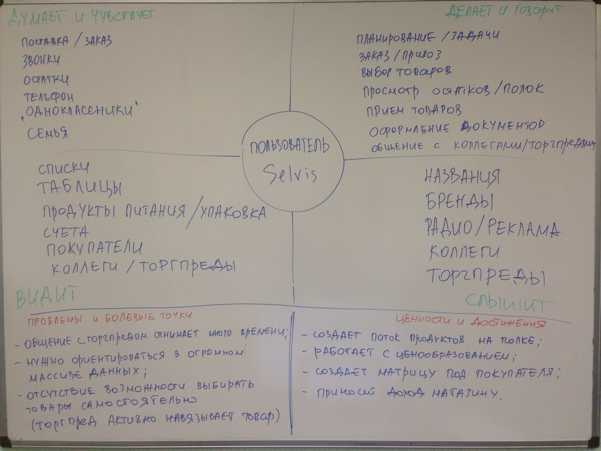

Selvis – портал, объединяющий магазины, дистрибьюторов и производителей продуктов питания на одной онлайн-площадке на выгодных условиях для всех сторон.
Этот кейс о том, как работать с проектом без аналогов не только в Рунете, но и вообще в Интернет. О специфичном пользователе, новых паттернах и личных открытиях.
Selvis – уникальный проект. Это стартап, который имеет стабильные инвестиции, так как разрабатывается на базе одного из самых крупных дистрибьюторов продуктов питания в России.
Уникальность проекта в том, что это площадка для реализации продуктов питания в магазины, которая объединяет магазины, дистрибьюторов и производителей продуктов питания. И этот проект действительно не имеет аналогов в Рунете и в мировой сети.
Selvis агрегирует множество ролей и сценариев, которые порождают специфический функционал, а отсутствие аналогов дает возможность создавать уникальные паттерны, учитывая особенности групп пользователей.
Данная схема взаимодействия производителей с дистрибьюторами, а последних, в свою очередь, с магазинами, принята с начала 90-х годов прошлого века, и действует на российском рынке повсеместно
При этом все процессы работают «вручную», то есть все договора, бухгалтерия, заказы – бумажная бюрократия.
Процессы не автоматизированы и требуют колоссальных усилий со стороны всех участников процессов, но в большей мере, торговых представителей.
При этом только у дистрибьютора, на базе которого разрабатывается Selvis, огромное количество партнеров:
Производители продуктов питания заинтересованы получать как можно больше информации от дистрибьторов и торговых точек, которые покупают их продукцию.
Каждый производитель хочет управлять своими продажами: объемами, каналами, линейками товаров.
Дистрибьютор является посредником между производителем и торговой точкой.
Поэтому дистрибьютор заинтересован получать объективный фидбек от каждой из сторон, в чем ему помогает Selvis.
Товары, которые поставляют производители через дистрибьюторов, организованы в огромный рубрикатор, где каждая тороговая точка может найти нужные и сформировать заказ.
А так же, просмотреть историю заказов, движение средств на счете, получить сертификаты, участвовать в бонусной программе.

Это не первый большой проект для меня, но именно в нем у меня больше всего ролей. Очень многое стало новым опытом, что еще более ценно: несколько исследований, бизнес-анализ процессов компании, работа «в полях», общение с очень разными пользователями – все это и еще очень многое дал мне этот проект.
Персонажи, сценарии, исследования, различные метолики - все это помогало мне вникать в ментальную модель пользователя, чтобы совместить с моделью реализации и бизнес-задачами.
Сложно было работать именно с визуализацией, потому что продукт без аналогов и ты не можешь предсказать, как именно сработает тот или иной паттерн. При этом, имея базу в виде исследований очень узкой специфичной категории пользователей, приходилось порождать собственные паттерны.
Знание пользователя бесценно, но без досконального знания всех бизнес-процессов невозможно проектировать под задачи бизнеса.
Некоторые процессы нужно из офлайна переносить в онлайн и оптимизировать таким образом, чтобы они стали доступннее и комфортнее для пользователя, который никогда не работал по-другому (25 лет однообразных процессов породили несколько поколений специалистов, работающих по единой схеме).
Это новая для меня функция: я работала с пилотной группой торговых представителей, где сама разрабатывала программу, обучала, тетсировала и отрабатывала сценарий «в полях», а после работала наблюдателем, координировала в процессе внедрения продукта.
В первые два месяца я изучала процессы бизнеса и пользователей, коих было множество: было много ролей в каждом сегменте проекта, у всех были свои сценарии, которые мы выстраивали сначала по гипотезам, а не по факту исследований.
На пользователях и конкретном сводном персонаже стоит остановиться и рассказать более подробно.
Когда я только приступила к проекту, мы говорили про несколько личных кабинетов на базе Selvis, которыми будут пользоваться три типа пользователей: преставитель магазина, преставитель дистрибьтора, преставитель производителя.
Но в дальнейшем оказалось, что в каждом из этих сегментов ни одна роль. Только на стороне магазина может быть от четырех ролей и более: продавец отдела, старший продавец магазина, товаровед, директор магазина. И при этом у директора может быть помощник, а товароведы имеют несколько типов.
Я расскажу подробнее о пользователях сегмента «Магазин»:
Продавцы могут быть сотрудниками одного конкертного магазина, либо сети магазинов.
Так же продавцы могут иметь несколько типов: продавец отдела магазина, продавец отдела магазина в сети, старший продавец отдела сети, старший продавец магазина, старший продавец смены, продавец-кассир.
Товароведы имеют так же несколько типов, которые разграничены в основном по специфике функционала: товаровед-закупщик, который занимается только закупкой товара; товаровед-оценщик, который формирует остатки, работает с ценообразованием; товаровед-универсал – на все руки мастер.
Управляющие разделяются в основном на зоны отвественности, либо по объемам бизнеса. Отсюда возникают следующие типы: управляющий конкретного магазина (он же чаще всего собственник); управляющий магазина в сети; управляющий конкретным направлением в сети.
Из классификации типов ролей видны масштабы сценариев. Напомню, мы рассматриваем только пользователей сегмента «Магазин».
В процессе «поездок в поля» – это означает поездку с торговым представителем по маршруту (по магазинам), я собирала информацию о специалистах, которые делают заказ в магазин.
По факту этих данных, совместно с рабочей группой, мы приняли решение о приоритете роли «Товаровед».
Опираясь на данную роль, я проработала несколько персонажей, которые потом методом карточной сортировки привела к одному обобщенному персонажу.
Об этом персонаже стоит рассказать подробнее:
Тетя Маша стала сводным портретом изученных товароведов. Но при конкретных сценариях мы возвращались к более узким персонажам, коих было 13.
В дальнейшем, мы сформировали карту эмпатии для того, чтобы приблизиться к ментальной модели пользователя данного сегмента:
Мы рассмотрели более подробно только пользователей сегмента «Магазин», но остались так же пользователи сегментов: «Дистрибьютор» и «Производитель».
В них роли, естественно, другие, но по количеству их меньше, чем в «Магазине».
В любом случае, множество ролей стоит группировать и выбирать по факту более приоритетную роль, потому что множество сущностей порождают множество сценариев, посредством этих сценариев увеличивая надуманный функционал, что в свою очередь приведет к визуальному захламлению интерфейсов.
В процессе проектирования и разработки первой версии проекта, мы думали не только о пользовательских сценариях, но и о горизонте событий: после запуска первой версии в продакшн нам нужно было внедрить проект с помощью пилотной группы торгпредов и определнного количества магазинов.
Во время обсуждений сценариев внедрения, появился идеальный сценарий, который бы в случае реализации, подтвердил большое количество гипотез, которые лежали в его основе.
Торгпред приезжает в любой из своих магазинов, предварительно выбрав представителя магазина, который будет использовать Selvis в работе.
Презентует устно и, используя рабочий ПК представителя магазина (товароведа) для демонстрации.
Берет номер телефона преставителя, который тут же вносит в базу данных, после чего представителю магазина на указанный номер телефона приходит смс с кодом.
Данный код представитель использует для первичного входа в свой личный кабинет.
Товаровед, используя свой номер телефона, как логин, а код из смс, как пароль, входит в личный кабинет своего магазина.
Здесь, изучив основной функционал кабинета самостоятельно: возможность вручную сформировать заказ; автоформирование заказа путем загрузки excel-файла; бонусные программы текущего месяца; история совершенных заказов; личный счет по бонусным программам; бухгалтерская документация.
Товаровед делает самостоятельно заказ: использует матрицу товаров (Мой ассортимент) и статистику последних заказов, чтобы заказать товары, которые берет постоянно; так же товаровед использует каталог, в котором может найти нужный товар или товар, который брал достаточно давно и он уже выбыл из матрицы.
Отложив нужные товары в корзину, товаровед оформляет заказ, который будет перенаправлен торгпреду.
Торгпред подтверждает заказ, либо может предварительно пообщаться с товароведом по данному заказу, после чего подтвердит заказ на выполнение и заказ уйдет на склад.
Чуть ниже я опишу исследование, в котором данный сценарий полностью подтвердился: по нему сработало достаточное количество точек, чтобы мы могли знать наверняка - это не совпадение.
Сценарий «3 шага» мы рассматривали идеальным потому, что товаровед никогда не работал по такой схеме, не имел подобных инструментов и в принципе относится к попыткам любых улучшений и оптимизации: «у меня все есть, мне и так хорошо». Поэтому замотивировать нашего пользователя крайне трудно.
А, если еще помнить о том, что наш пользователь - это в большинстве своем женщины в возрастной категории 35-55, то само использование web-продуктов становится плохо преодолимым препятствием.
Изначально каталог имел горизонтальный вид, но было понятно, что имея строгую последовательность, нельзя достигнуть маневренности и комфорта в использовании.
Нужно было не просто привести каталог к комфортной моторике, но и дать пользователю возможность просматривать как можно больше информации в один момент времени.
Так появился уникальный паттерн, который был предложен после нескольких штурмов, как альтернатива стандартным видам меню: ‘‘дереву‘‘ и выпадающему меню.
Он имел следующие свойства:
Слева представлен каталог в виде «дерева», справа – каталог открытого типа:
Основным условием стала задача ‘‘показать пользователю как можно больше позиций‘‘.
Если в первом и втором уровне от 10 до 15 пунктов, то в 3 и 4 уровнях может быть от 1 до 49 пунктов.
И нужно показать все, потому что пользователь не должен искать, ему нужно показывать.
Четыре уровня в каталоге - это означает, что ‘‘дерево‘‘ при использовании будет слишком громоздким, а использование выпадающего меню конфликтует с условием открытого вида.
В любом web-проекте мы имеем ограничение пространства, но когда мы говорим о b2b-проекте, то ограничение это становится почти физически ощутимым, потому что каждый пиксель становится очень дорогим.
Если учесть весь объем функционала, на странице «Заказ», то на Каталог места было отведено по минимуму.
Как видно на изображениях выше, каталог постепенно трансформировался – порядка 5 версий каталога было реализовано, пока мы не получили четыре зоны, на которых расположились четыре уровня, 2 из которых имеют строгую иерархию: Отдел магазина и Группа товаров. 2 других – Вид товара и Бренд расположены в горизонтали, то есть пользователь после обязательного выбора первых 2 уровней, может выбирать либо бренд, либо вид товара – это не влияет на уменьшение информации, потому что при фильтрации по бренду или виду, пользователь увидит дополненую информацию относительно своего выбора.
‘‘История из жизни, как инсайт.
Моя подруга в одну большую коробку пыталась сложить коробки из-под обуви (чтобы зимой снова убрать в них обувь, а пока, чтобы не мешались – убрать в кладовую), и у нее никак не получалось их сложить (это как в игре «Тетрис» – все ведь ждали «палочку»?).
Я минут 20 смотрела на это, потому что было очень интересно: получится или нет. Но время шло, нервы кончались, а коробки никак не помещались.
И мне вдруг пришло в голову: коробка – это что? Нечто целое. Но ведь ее можно просто разложить на основу и крышку (ООП в действии).
Через 2 минуты мы уместили все коробки и еще немного места осталось.‘‘
Эта история о том, как мы разложили «коробку» каталога и получили удобную фильтрацию на минимальной площади.
Данный паттерн можно использовать для любого каталога, где 3 и более уровней иерархии. Понятно, что множить сущности просто так не стоит, но паттерн удобен для больших рубрикаторов.
Это исследование было решено провести после продакшна 1 версии. Перед нами стояли несколько задач: понять поведение пользователя на «живом» продукте, отследить реакцию и фидбек пользователя, скорость внедрения, выявить и пофиксить баги.
Исследование было длительным – 3 месяца: 1 месяц подготовки и 2 – непосредственно само исследование, и требовало наблюдения, опроса, интревью в течении всего времени пилотного запуска.
Весь процесс работ был разбит на три итерации, которые я вела:
Мы выбрали несколько потенциальных торгпредов для участия в исследовании.
После чего я под различными предлогами отправилась с ними в поездки, где уже отрабатывала нужные тесты, опрашивала их.
Я проводила скрытое интервьюирование торгпредов по заранее оговоренному сценарию.
После чего мы отобрали участников по нужным характеристикам и провели для них презентацию Selvis, где ответили на вопросы и возражения, представили программу исследования и ее мотивационную часть.
После презентации я приступила к обучению торгпредов: они должны будут презентовать Selvis, работать с возражениями и вопросами от конечных пользователей.
Обучение проводилось в несколько этапов, иногда персонально – некоторым из торгпредов было сложно проходить совместно с остальными обучение из-за плохих навыков работы с ПК.
После обучения я протестировала участников путем постановки простых ролевых ситуаций, как при работе с интерфейсом, так и при контакте с пользователем.
На данном этапе я отправилась в поездки по маршруту с участниками пилотной группы, где отслеживала качество презентаций торгпреда конечному пользователю, корректировала сценарии общения торгпреда, собирала необходимую информацию о пользователях: реакция на презентацию, вопросы, возражения, комфорт использования (в некоторых случаях пользователи начинали регистрацию прямо при нас), а так же собирала информацию о багах.
В процессе исследования были задействованы 5 торговых представителей одного из дистрибьюторов. У каждого из торгпредов было от 35 до 75 торговых точек, что в сумме дало порядка 300 магазинов.
Реакция в магазинах балы очень разная: от интереса до открытой агрессии: в большинстве случаем, чем моложе был сотрудник магазина, тем положительнее проходила презентация.
Сами торпреды пилотному запуску отнеслись с опаской, потому что как и любой другой специалист, в работе которого проиходят перемены, торпреды предположили, что Selvis станет причиной массовых увольненений. Но в процессе исследования, когда торгпреды осознали, что Selvis станет дополнением к их работе – отрицание сменилось приятием.
Выше я описывала сценарий, который был для нас идеальным: товаровед полностью автономно совершает заказ, при этом полностью понимая весь функционал и умея им пользоваться, не привлекая торпреда.
Это сценарий не только сработал, но и подтвердился у достаточного количества магазинов, чтобы смело можно было сказать, что он не только работает, но он должен стать основным в дальнейшем развитии проекта.
«А торговый представитель больше не нужен? Саша, ты перестанешь к нам приезжать? Просто нам это будет очень неудобно.»
– Галина, товаровед
«Сделать это в интернете – нереально. В каталоге больше 5000 тысяч позиций.. как мы будем с этим работать?!»
– Елена, товаровед
«Это удобно: я могу в любой день сделать заказ, не ждать торгового, не звонить ему. Просто выбираю отдел, смотрю остатки на полках и собираю заказ.»
– Наталья, товаровед
«Я приезжаю в эту точку теперь раз в две недели, проверяю полки, смотрю все. А товаровед делает заказ через Селвис и в принципе всем довольна, иногда звонит мне – меняем цены или я советую ей какой-то товар.»
– Антон, торговый представитель
Такие комментарии мы зафиксировали в процессе. Они показывали истинную реакцию пользователя, и были собраны, как в момент презентации в магазине, так и позже – когда магазин уже начал использовать Selvis.
Так же благодаря данному исследованию, я смогла улучшить одну из своих CJM и довнести в нее больше деталей, выявленных из общения с товароведами и сотрудниками разных отделов, который взаимодействуют с представителями магазинов в тех или иных задачах.
Таким образом, по окончанию исследования мы отследили скорость внедрения проекта, получили фидбек от пользователя, отладили ошибки технического плана и получили статистику выполнения определенных задач, которая где-то подтвердила, а где-то опровергла наши гипотезы.
В этом проекте я работаю уже 2 года. За это время я провела несколько крупных исследований, поработала с методиками, которые ранее мне были недоступны (в силу ограничения возможностей тех компаний, в которых я работала ранее), посвятила очень много времени изучению пользователя, его поведения и особенностей.
Этот проект дал мне не просто этап для развития, но научил так же коммуникациям в определенного типа среде, умению работать с очень «узким» пользователем, смотреть на многие факторы более объективно.
Этот проект был наполнен ими: когда ты все время думаешь об определенном наборе задач, то начинаешь находить решение этих задач в абсолютно неожиданных событиях и вещах.
Исследования и новые возможности в данном проекте позволили мне переосмыслить многие теоретические знания, которые я постоянно стараюсь пополнять.
Пользователь данного проекта очень специфичен: консервативен, капризен и ограничен в знаниях.
Это научило уделять больше внимания тем аспектам, которые в других проектах казались неважными или даже странными.
Аджайл очень дисциплинирует, дает возможность работать над ошибками регулярно, уделять достаточно времени всем деталям, помогает освободиться от режима многозадачности и проработать конкретную задачу.
Для многих моих коллег ТЗ давно стало основным документом, тогда как спецификации намного гибче: в данном формате можно использовать и пользовательские сценарии, и сторителлинг, и чаты комментариев.
Чем больше проект, тем масштабнее в нем сценарии и связи – с большим объемом сложно работать, если нет четкой логики в проекте. Таким образом, ты либо развиваешь в себе объективность и логику, либо процесс тебя засасывает и ты плодишь «мусорный» интерфейс.
Есть еще одна важная деталь, понимание которой пришло на этом проекте.
В книге азов проектирования «Об интерфейсе», Купер описывает три модели по Норману: модель реализации, которая подробно описывает внутреннее устройство проекта; ментальную модель, которая описывает представления пользователя о проекте путем простейших ассоциативных связей; модель представления, которая используется проектировщиком, как способ представления пользователю функционирования проекта.
Норман говорит о том, что чем ближе наш интерфейс к ментальной модели пользователя, тем это лучше.
Норман говорит о том, что чем ближе наш интерфейс к ментальной модели пользователя, тем это лучше.
‘‘Работая в Selvis, я поняла, что существует парадокс тройной модели Нормана.
Он заключается в том, что есть случаи, когда модель реализации в процессе исторического развития той или иной сферы/профессии становится ментальной моделью.‘‘
Объясню на примере.
Excel и 1С – инструменты, которые очень близки к модели реализации (их изначально проектировали именно программисты, что ни есть хорошо, ибо тот же Норман утверждает: инженеры и математики, априори, проектируют в любом интерфейсе именно модель реализации, что, как мы помним, не очень хорошо для пользователя), в ходе исторического развития сферы бизнеса реализации продуктов питания, стали основными инструментами для работы.
За последние 15 лет к Excel и 1С так привыкли, что эти продукты легли в основу ментальной модели пользователя.
Есть в данном парадоксе нюанс: имея узко специализированную группу пользователей (например, специалистов одной профессии), мы не можем использовать для проектирования их ментальную модель об устройстве подобного проекта, который данная группа использует не в профессии.
Объясню на примере.
Уже была компания – дистрибьютор продуктов питания, которая сделала сайт для онлайн-продаж в магазины.
Это кончилось плачевно, именно по причине того, что компания при создании сайта учла бытовую ментальную модель пользователя, но никак не профессиональную.
Это открытие и другие инсайты, помогли мне в процессе работы над данным проектом, но я хотела акцентировать эту мысль в частности, потому что она позволила мне пересмотреть изученную мной уже в прошлом теорию.